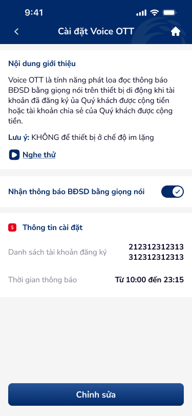

🔎 03 · Các vấn đề được phát hiện
🔴 Nghiêm trọng — Cần xử lý ngay
UXP-001
OTP bottom sheet thiếu "Gửi lại OTP" button và countdown timer — user stuck nếu...
Critical| Hiện trạng | OTP bottom sheet thiếu 'Gửi lại OTP' button và countdown timer — người dùng stuck nếu SMS delayed. Vi phạm DDL otp-input-1 spec. |
| Tác động | Voice OTT registration = account-level change. Failed OTP → cannot register → completely blocked from service. |
| Nguyên tắc vi phạm |
|
| Đề xuất |
|
UXP-002
"Xoá tất cả thông báo" không có confirmation dialog — destructive action không...
Critical
| Hiện trạng | 'Xoá tất cả thông báo' — destructive action hiển thị trực tiếp không có xác nhận dialog. |
| Tác động | One-tap 'delete all notifications' → irreversible data loss. All notification preferences wiped. |
| Nguyên tắc vi phạm |
|
| Đề xuất |
|
🟡 Quan trọng — Ưu tiên cao
UXP-003
Thiếu error state cho time fields khi nhập range không hợp lệ (Từ > Đến)
Major
| Hiện trạng | Time fields thiếu trạng thái lỗi khi 'Từ' > 'Đến' — invalid range not validated inline. |
| Tác động | Invalid time range submitted → server error or unexpected scheduling behavior. |
| Nguyên tắc vi phạm |
|
| Đề xuất |
|
UXP-004
Account picker thiếu max-selection indicator — cognitive overload khi nhiều TK
Major
| Hiện trạng | Account picker thiếu max-selection indicator — người dùng doesn't know if 3/10 or 3/3 accounts selected. |
| Tác động | No max limit shown → người dùng selects all accounts → may not realize Voice OTT applies to all. Selection count: '3/5 selected'. |
| Nguyên tắc vi phạm |
|
| Đề xuất |
|
UXP-005
Thiếu loading/processing state sau khi submit OTP — user không biết hệ thống...
Major| Hiện trạng | Thiếu loading/processing state sau submit OTP — no feedback during registration process. |
| Tác động | OTP submitted → blank → người dùng taps again → potential duplicate registration calls. |
| Nguyên tắc vi phạm |
|
| Đề xuất |
|
UXP-006
Success popup thiếu chi tiết giao dịch và chỉ có 1 exit option "Đóng"
Major| Hiện trạng | Success popup chỉ generic message + 'Đóng'. Thiếu: TK registered, time window, and secondary actions. |
| Tác động | người dùng registered Voice OTT but doesn't have xác nhận of WHAT was registered. No reference for future. |
| Nguyên tắc vi phạm |
|
| Đề xuất |
|
UXP-007
Toggle "Nhận thông báo BĐSD" height 24px < 44px minimum — accessibility fail
Major
| Hiện trạng | Toggle 'Nhận thông báo BĐSD' height 24px — dưới 44px minimum touch target. khả năng tiếp cận fail. |
| Tác động | 24px toggle = 55% smaller than minimum. Mistouch risk extremely high. người dùng with motor disabilities severely impacted. |
| Nguyên tắc vi phạm |
|
| Đề xuất |
|
UXP-008
Account numbers hiển thị full không masked — vi phạm banking security best...
Major| Hiện trạng | Account numbers '212312312313', '312312312313' hiển thị full không masked — PII exposure. |
| Tác động | Multiple account numbers visible on registration screen. Must mask by default. |
| Nguyên tắc vi phạm |
|
| Đề xuất |
|
⚪ Cải thiện — Nâng cao trải nghiệm
UXP-009
Bottom sheet menu items thiếu icons phân biệt — giảm discoverability
Minor| Hiện trạng | Bottom sheet menu items text-only — thiếu icons phân biệt. Reduced khả năng khám phá. |
| Tác động | Text-only menu items = slower scanning. Icons cung cấp pre-attentive visual cues. |
| Nguyên tắc vi phạm |
|
| Đề xuất |
|
UXP-010
Success message generic, không có TK number hay time window confirmation
Minor| Hiện trạng | Success message generic — no TK number or time window xác nhận in message body. |
| Tác động | Generic 'Đăng ký thành công' without specifics → người dùng không thể xác minh correct configuration. |
| Nguyên tắc vi phạm |
|
| Đề xuất |
|